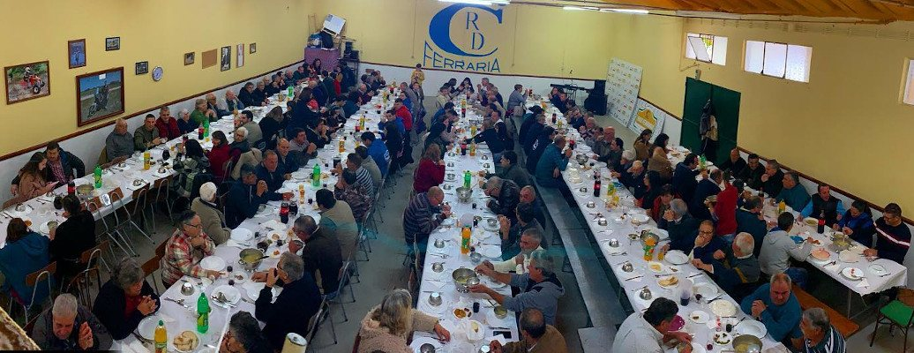

Descarrega
Abre e imprime a ficha de sócio.
Sócios
Ser sócio é ajudar a manter viva a sede, as festas, o Raid, os convívios e todas as atividades que juntam a Ferraria.
Novo sócio
Para te tornares sócio, descarrega a ficha, preenche todos os dados e entrega na sede do CCRD Ferraria ou combina a entrega com a direção.
Vida associativa
Todos os anos o clube reúne sócios, amigos e população no almoço/jantar de aniversário. É um dos momentos mais importantes da vida associativa: uma mesa grande, muita conversa, reencontros e celebração do trabalho feito por todos.
Em 2019, o Clube Ferraria assinalou 35 anos e contava já com cerca de 200 sócios, reforçando a dimensão da comunidade que apoia o CCRD Ferraria.

Abre e imprime a ficha de sócio.
Escreve com letra legível e confirma todos os dados.
Entrega na sede ou combina com a direção.
Ajuda a manter vivas as atividades do clube.
Quotas
Após o pagamento, envia o comprovativo para o email do clube, mencionando o nome e número de sócio a que o pagamento se refere.
Sem o envio do comprovativo, o pagamento poderá não ser validado.
Participar
Ser sócio é apoiar a Ferraria, preservar a história e ajudar a criar novos eventos para as próximas gerações.
Contactar